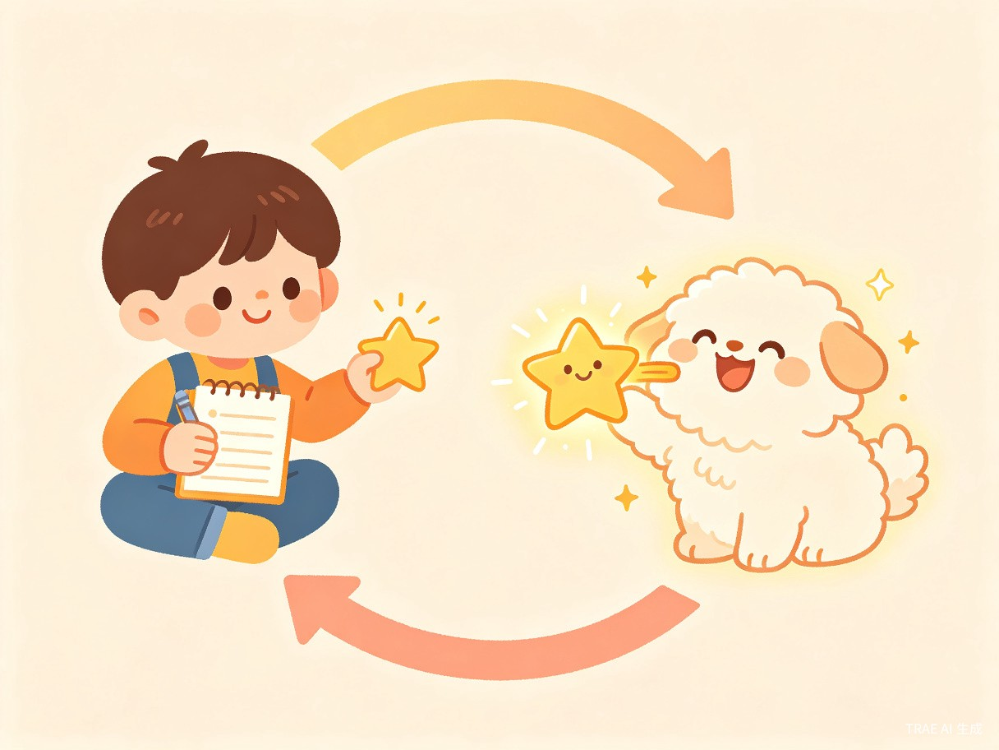
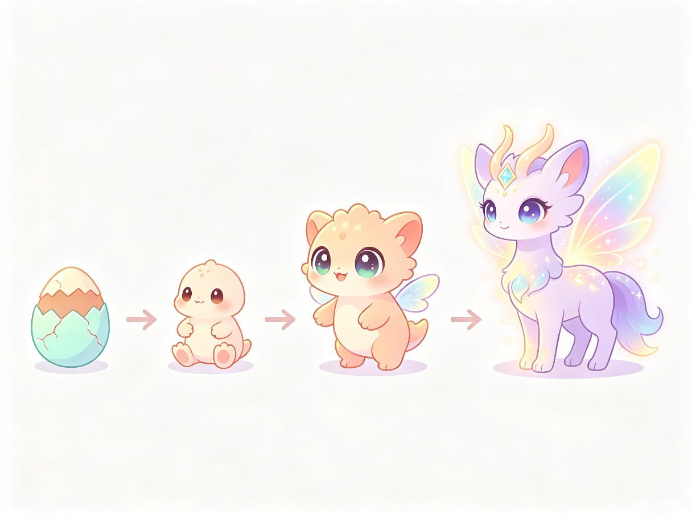

项目概览
项目名称：萌宠成长记
参赛赛道：社区公益 - 青少年身心健康（习惯培养方向）
作品类型：创意互动小游戏 / 实用工具
目标用户：6-12 岁小学生及其家长
核心定位：通过虚拟宠物养成机制，将日常作业和任务转化为有趣的游戏体验，帮助小朋友主动养成良好学习习惯，同时为家长提供一种温和、正向的任务管理方式。
痛点分析
写作业枯燥乏味，缺乏内在动力。家长反复催促让孩子产生抵触情绪，甚至引发亲子矛盾。孩子需要一个有趣的理由去主动完成任务。
每天催促孩子写作业是"拉锯战"。打骂教育效果有限且伤害亲子关系，物质奖励又容易让孩子变得功利。家长需要一种温和有效的激励工具。
习惯养成需要持续的正向反馈和即时奖励机制。游戏化学习已被证明能有效提升儿童的内在动机和任务完成率。游戏 + 教育的结合是最佳切入点。
核心玩法
「萌宠成长记」的核心循环非常简单直观：完成任务 → 获得奖励 → 喂养宠物 → 宠物成长。小朋友在照顾虚拟宠物的过程中，自然而然地完成了学习和生活任务。

游戏循环详解
宠物是小朋友的"责任伙伴"，不是简单的积分兑换。小朋友会因为关心宠物的心情和成长而主动完成任务，这种内在动机比外在奖励更持久。
功能模块
1. 宠物系统
首次进入游戏，小朋友可以从多种可爱的宠物中选择一只作为自己的专属伙伴，给它取名字、选择初始颜色。
宠物拥有多种属性：心情值、饥饿度、清洁度、能量值。不同状态会影响宠物的外观表现和互动行为。
随着小朋友持续完成任务，宠物会逐步进化成长，从蛋 → 幼崽 → 少年 → 成体，每个阶段外观和互动方式都不同。
完成任务解锁装扮道具（帽子、围巾、眼镜等），小朋友可以自由搭配，打造独一无二的宠物形象。

2. 任务系统
家长端：家长可以创建自定义任务，设置任务名称、描述、难度星级和对应奖励数量。支持创建"每日任务"（如写作业、练字）和"一次性任务"（如打扫房间）。
小朋友端：查看今日待完成任务列表，完成后点击"我完成了"按钮，等待家长确认。
审核机制：家长收到完成通知后，确认或退回任务。确认后奖励自动发放到小朋友的账户。
3. 奖励与互动系统
完成任务获得的金币和道具，可以在商店中购买食物、玩具、清洁用品等，用于照顾宠物。
与宠物互动时可以玩轻量小游戏：接食物、记忆翻牌、猜拳等，增加趣味性和粘性。
连续完成任务天数越多，每日奖励倍率越高。设置"周冠军""月冠军"成就，培养长期习惯。
4. 成就系统
设立多维度成就勋章：
- 学习达人：累计完成 50 个学习任务
- 勤劳小蜜蜂：连续 7 天完成所有任务
- 宠物大师：宠物进化到最终形态
- 收藏家：收集 10 套宠物装扮
- 游戏高手：小游戏累计获得 1000 分
5. 家长控制台
家长专属功能面板：
- 自定义任务内容和奖励数量
- 查看孩子的任务完成统计（日/周/月报表）
- 设置每日任务上限，防止沉迷
- 调整宠物状态衰减速度（平衡游戏难度）
技术方案
| 模块 | 技术方案 | 说明 |
|---|---|---|
| 作品形态 | 单页 HTML 应用 | 零部署，浏览器直接打开即可使用 |
| 前端框架 | 原生 HTML + CSS + JavaScript | 轻量、快速，适合小游戏场景 |
| 宠物渲染 | CSS 动画 + Canvas | 宠物状态变化通过 CSS 动画表现，小游戏用 Canvas |
| 数据存储 | LocalStorage | 本地存储用户数据，无需服务器 |
| UI 风格 | 卡通扁平化 | 明亮配色、圆角设计，符合儿童审美 |
| 响应式 | 移动端优先 | 适配手机/平板/电脑，方便随时使用 |
整个作品为单个 HTML 文件，无需安装、无需注册、无需联网（核心功能），评委打开浏览器即可体验完整游戏流程。完全符合大赛对 HTML 作品的要求。
实现计划
| 阶段 | 内容 | 预计时间 |
|---|---|---|
| 第一阶段：核心原型 | 宠物选择 + 任务创建/完成 + 奖励发放 + 宠物状态变化 | 3-4 天 |
| 第二阶段：丰富体验 | 宠物进化系统 + 装扮商店 + 成就系统 + 小游戏 | 3-4 天 |
| 第三阶段：打磨优化 | UI 美化 + 动画效果 + 家长控制台 + 数据统计 | 2-3 天 |
| 第四阶段：测试完善 | 完整流程测试 + Bug 修复 + 体验优化 | 1-2 天 |
创新亮点
传统习惯养成 App 靠积分和排行榜激励，孩子容易厌倦。我们用宠物情感连接作为核心驱动力，让孩子因为"关心宠物"而主动完成任务。
不是单方面监控孩子的工具，而是亲子协作的平台。家长布置任务、确认完成，孩子照顾宠物、获得成就感，双方都有参与感。
不只是"完成任务拿积分"的简单模型，而是融入了进化、收集、装扮、小游戏等多层游戏机制，保证长期可玩性。
单个 HTML 文件，无需安装 App、无需注册账号、无需联网，打开浏览器就能玩。降低使用门槛，让更多家庭可以轻松体验。
赛道契合度分析
| 评审维度 | 契合说明 |
|---|---|
| 习惯培养 | 通过每日任务打卡机制，帮助小朋友建立规律的学习习惯 |
| 心灵陪伴 | 虚拟宠物作为"陪伴者"，给孩子情感寄托和正向心理暗示 |
| 正向激励 | 取代打骂催促，用游戏化正向反馈引导孩子主动学习 |
| 亲子关系 | 提供温和的亲子协作方式，减少因催作业产生的家庭矛盾 |
| 社会价值 | 关注青少年学习习惯和心理健康，具有广泛的社会意义 |
总结
「萌宠成长记」将虚拟宠物养成与日常任务管理巧妙结合，用游戏化的方式解决"孩子不爱写作业"这一普遍的家庭痛点。作品形式简洁（单 HTML 文件），但体验完整、情感丰富，既是一个有趣的小游戏，也是一个实用的家庭教育工具。
我们相信，好的教育不是催促，而是引导。让一只可爱的小宠物陪伴孩子成长，让完成作业变成一件快乐的事情。